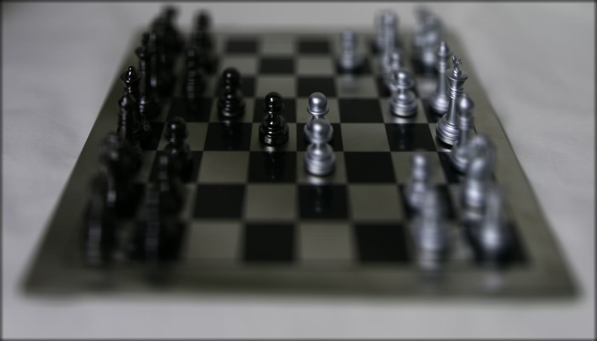

Project Overview
In this project, we reproduce complex imaging effects such as depth refocusing and aperture adjustment using real lightfield data, produced from the Stanford Light Field Archive.
This data captures 289 views over a 17 by 17 grid using gantry cameras, with each image storing its position relative to the camera which captured the image, and its UV coordinate.
With just the image, its corresponding camera position, and UV coordinates, we can reproduce these effects.
Part 1: Depth Refocusing
In this part, we will mimic depth refocusing using elementary techniques, such as shifting and averaging, over the lightfield image dataset.
In order to mimic depth refocusing, we will select an image to be the "center" of our data
(typically, we choose the image in the center of the 17 by 17 grid, so the image at posiiton (8, 8)).
We then iterate over all images in the dataset, and shift them relative to the (u, v) coordinates of the center image, implementing a depth scaling factor.
By adjusting this depth scaling factor, we can mimic the effects of refocusing an image across varying depths.
We add all shifted images together and average them in order to acheive this effect for a given depth scaling factor.
By iterating over different depth scaling factors, we can generate images to create a gif showcasing a camera refocusing from the front of a scene to the back.
Pictured below are scenes from the lightfield datasets averaged at different depth factors (labeled as 'd'), and gifs showcasing the refocusing effect:
| Chess Scene, d = -0.5 |
Chess Scene, d = -0.2 |
Chess Scene, d = 0 |
Chess Scene, d = 0.1 |
|
 |
|
|
| From d = -0.5 to d = 0.3, step size = 0.1 |

|
| Lego Gantry Scene, d = 0.5 |
Lego Gantry Scene, d = 0.2 |
Lego Gantry Scene, d = 0 |
Lego Gantry Scene, d = -4.5 |
|
|
|
|
| From d = 0.7 to d = -3.5, step size = 0.1, then d = -3.5 to d = -5.0, step size = 0.25 |

|
Part 2: Aperture Adjustment
In this part, we mimic shifting aperture sizes, which will change the depth of field of a photo, depending on the radius of the aperture.
Using the same lightfield dataset, we can create images that mimic the effects of aperture adjustment by averaging images that are within a certain radius away from our chosen center image, relative to their camera positions (not their UV coordinates).
Note that we use the same averaging technique as above, but we limit what images we average based on the above condition.
A larger radius will mimic a larger aperture size, resulting in more blurring around parts of the image not in focus, while a smaller radius will result in more of the image being in focus.
Pictured below are some results, along with gifs showcasing aperture adjustment:
| Chess Scene, r = 0 |
Chess Scene, r = 4 |
Chess Scene, r = 8 |
Chess Scene, r = 10 |
|
|
|
|
| From r = 0 to r = 8, step size = 1 |

|
| Gantry Scene, r = 0 |
Gantry Scene, r = 4 |
Gantry Scene, r = 8 |
Gantry Scene, r = 10 |
|
|
|
|
| From r = 0 to r = 10, step size = 1 |

|
Conclusion
Although image generation took longer than expected (scipy's shift is very slow unfortunately) this project was very cool! I had been aware of light fields from CS 180, taught by Professor Ren, but being able to work with lightfield datasets to create very cool imaging effects was a lot of fun!